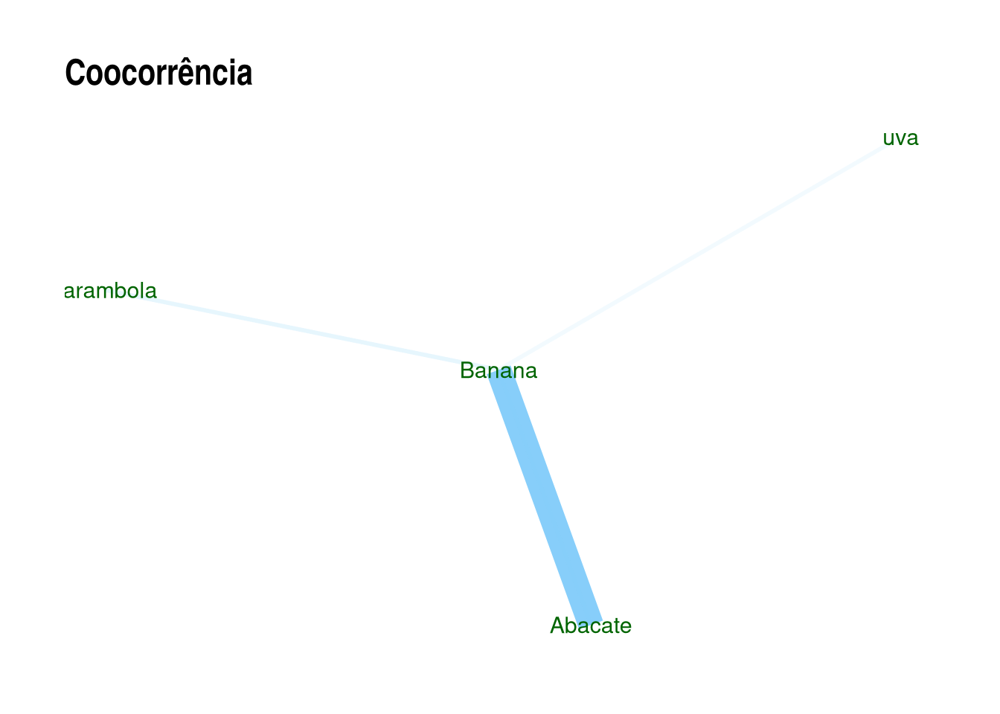
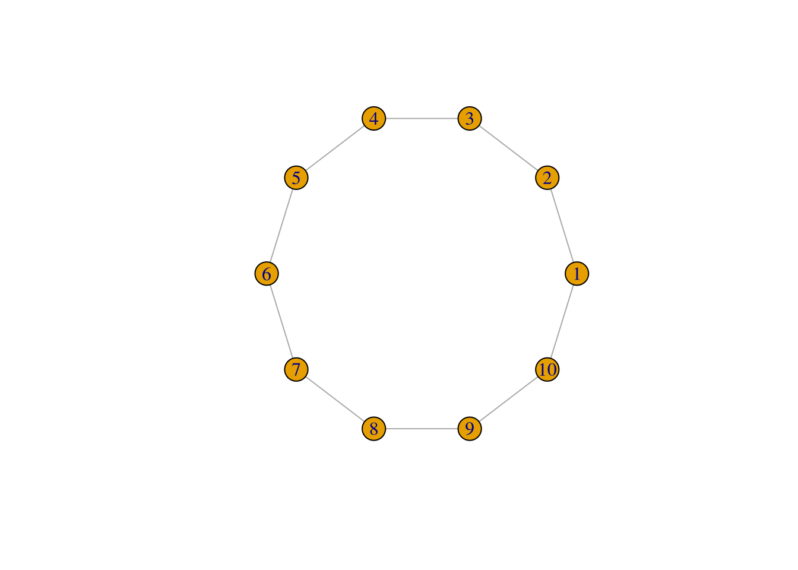
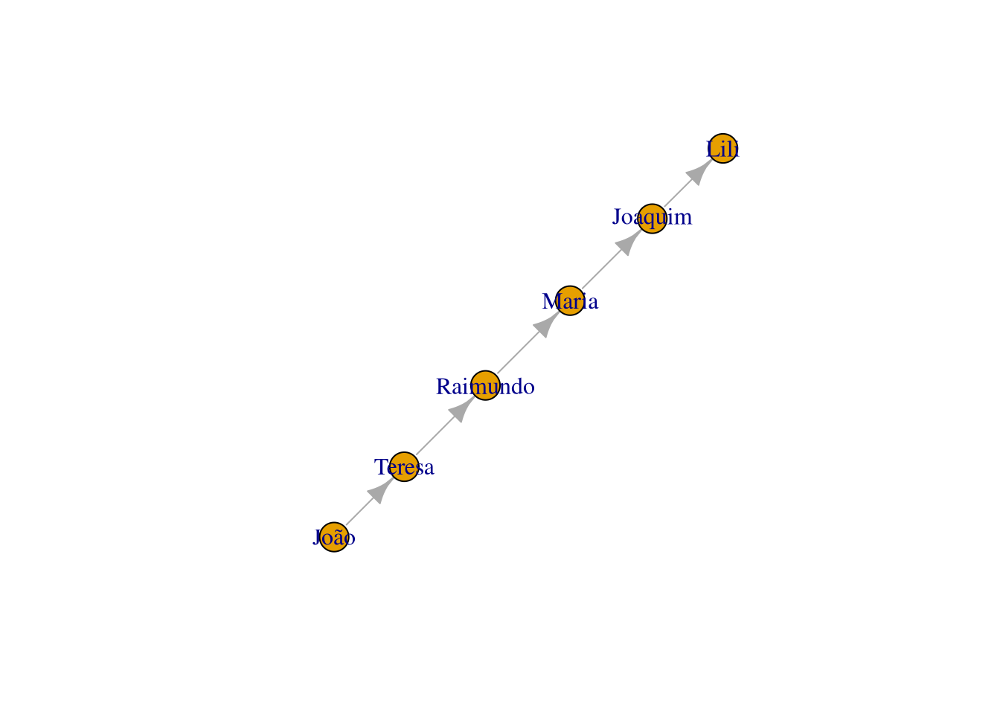

9 Text mining: Semantic Parsing
Até agora vimos abordagem onde a ordem das palavras e sua função gramatical não importava na análise, a chamada abordagem “saco-de-palavras”. Vamos agora para análise onde isso se faz importante, a abordagem semântica.
9.1 POS - Part-of-speech tagging
É possível identificar a classe gramatical de cada palavras das frases. Vários pacotes no R fazem isso:
- openNLP, uma interface em R sobre o Apache OpenNLP tools, escrito em Java, com suporte a vários modelos de linguagem, inclusive o português
- coreNLP (Wrapper ao redor do Stanford CoreNLP Tools)
- Qdap com a função
qdap::pos()(O pacote requer rJava, que requer JDE e JRE do Java instalados no seu computador, fora do R), - RcppMeCab que é um wrapper da biblioteca “mecab”,
spacyr, um wrapper ao redor do spaCy do Python (requer a instalação do Python e algumas de suas bibliotecas),- UDPipe em C++(após a instalação, roda sem problemas no R) que possui modelos pré-treinados em 65 liguagens, inclusive o português.
- koRpus com suporte ao português e que possui integração com o programa gráfico rkward.
No caso de pacotes que requerem o Rjava, uma dica é, ao menos no Linux, antes de instalar o Rjava, rodar o seguinte comando no terminal (não no console do R!). O comando a seguir faz com que o Rjava consiga encontrar o Java, e assim evita alguns tipos de erro na instalação.
sudo R CMD javareconf 9.2 Pacote UDPipe
Para o P.O.S (part-of-speech tagging), vamos usar o pacote UDPipe, já que ele não requer Python ou Java, sendo um wrapper do UDPipe C++, evitando boa parte das complicações de instalação, como em outros pacotes. O projeto é da Institute of Formal and Applied Linguistics, Faculty of Mathematics and Physics, Charles University da Reṕublica Tcheca. A função de POS é baseada no Google universal part-of-speech tags. UD vem de universal dependencies, um framework aberto para anotações gramaticais com 200 treebanks em amsi de 100 linguas.
- Milan Straka, Jan Hajiˇc, Jana Strakov. ́UDPipe: Trainable Pipeline for Processing CoNLL-U Files Performing Tokenization, Morphological Analysis, POS Tagging and Parsing
- Modelos de línguas no github de jwijffels
Após instalar, carregando o pacote:
library(udpipe)Vamos instalar um modelo de lingua não inglesa. Para ver a lista de linguagens disponíveis, rode o comando ?udpipe_download_model. Mas atente que nem todas as línguas estão disponíveis na última versão, sendo necessário a sua especificação. Para saber sobre os modelos em portuges utilizados no UD, veja aqui. Vamos utilisar a versão bosque, que funciona para PT-PT e PT-Br.
Tal como está, o download ocorrerá no diretório de trabalho atual (digite getwd() para saber)
# opção 1
dl <- udpipe_download_model(language = "portuguese-br",
udpipe_model_repo = 'jwijffels/udpipe.models.ud.2.0')
# Opção 2. "bosque" é a mais atual e mais utilisada
dl <- udpipe_download_model(language = "portuguese-bosque")
str(dl)Uma vez que o modelo foi baixado, vamos carregá-lo
udmodel_ptBosque <- udpipe_load_model(file = dl$file_model)Ou, caso tenha baixado em outro local:
udmodel_ptBosque <-
udpipe_load_model(file = "~/Documentos/R/portuguese-bosque-ud-2.5-191206.udpipe")E vamos aos testes:
library(dplyr)
texto <- "O rato Rogério roeu rapidamente a roupa roxa do rei Roberto de Roma."
txt.anotado <- udpipe::udpipe_annotate(udmodel_ptBosque, x = texto) %>% as.data.frame()
str(txt.anotado)
## 'data.frame': 16 obs. of 14 variables:
## $ doc_id : chr "doc1" "doc1" "doc1" "doc1" ...
## $ paragraph_id : int 1 1 1 1 1 1 1 1 1 1 ...
## $ sentence_id : int 1 1 1 1 1 1 1 1 1 1 ...
## $ sentence : chr "O rato Rogério roeu rapidamente a roupa roxa do rei Roberto de Roma." "O rato Rogério roeu rapidamente a roupa roxa do rei Roberto de Roma." "O rato Rogério roeu rapidamente a roupa roxa do rei Roberto de Roma." "O rato Rogério roeu rapidamente a roupa roxa do rei Roberto de Roma." ...
## $ token_id : chr "1" "2" "3" "4" ...
## $ token : chr "O" "rato" "Rogério" "roeu" ...
## $ lemma : chr "o" "rato" "Rogério" "roer" ...
## $ upos : chr "DET" "NOUN" "PROPN" "VERB" ...
## $ xpos : chr NA NA NA NA ...
## $ feats : chr "Definite=Def|Gender=Masc|Number=Sing|PronType=Art" "Gender=Masc|Number=Sing" "Gender=Masc|Number=Sing" "Mood=Ind|Number=Sing|Person=3|Tense=Past|VerbForm=Fin" ...
## $ head_token_id: chr "2" "4" "2" "0" ...
## $ dep_rel : chr "det" "nsubj" "appos" "root" ...
## $ deps : chr NA NA NA NA ...
## $ misc : chr NA NA NA NA ...
# Para vermos apenas as classes gramaticais, apenas filtramos pela coluna:
txt.anotado$upos
## [1] "DET" "NOUN" "PROPN" "VERB" "ADV" "DET" "NOUN" "ADJ" NA
## [10] "ADP" "DET" "NOUN" "PROPN" "ADP" "PROPN" "PUNCT"Na coluna “upos”:
- Roberto e Rogério são “PROPN”, ou seja, “proper names”, ou “nomes próprios”
- rato aparece como “NOUN”, isto é, substantivo.
- “VERB é verbo, ADJ é adjetivo, ADV é advérbio.
Se quiser fazer só o POS Tagging, sem fazer lematização, e com isto ganhar tempo, pode-se restringir com o argumento tagger que pode ser um vetor:
texto2 <- "O fundamento psicológico sobre o qual se eleva o tipo das individualidades da cidade grande é a intensificação da vida nervosa"
txt.anotado2 <- udpipe_annotate(udmodel_ptBosque,
x = texto2, tagger = "default" , parser = "none") %>%
as.data.frame()
txt.anotado2
## doc_id paragraph_id sentence_id
## 1 doc1 1 1
## 2 doc1 1 1
## 3 doc1 1 1
## 4 doc1 1 1
## 5 doc1 1 1
## 6 doc1 1 1
## 7 doc1 1 1
## 8 doc1 1 1
## 9 doc1 1 1
## 10 doc1 1 1
## 11 doc1 1 1
## 12 doc1 1 1
## 13 doc1 1 1
## 14 doc1 1 1
## 15 doc1 1 1
## 16 doc1 1 1
## 17 doc1 1 1
## 18 doc1 1 1
## 19 doc1 1 1
## 20 doc1 1 1
## 21 doc1 1 1
## 22 doc1 1 1
## 23 doc1 1 1
## 24 doc1 1 1
## 25 doc1 1 1
## 26 doc1 1 1
## 27 doc1 1 1
## sentence
## 1 O fundamento psicológico sobre o qual se eleva o tipo das individualidades da cidade grande é a intensificação da vida nervosa
## 2 O fundamento psicológico sobre o qual se eleva o tipo das individualidades da cidade grande é a intensificação da vida nervosa
## 3 O fundamento psicológico sobre o qual se eleva o tipo das individualidades da cidade grande é a intensificação da vida nervosa
## 4 O fundamento psicológico sobre o qual se eleva o tipo das individualidades da cidade grande é a intensificação da vida nervosa
## 5 O fundamento psicológico sobre o qual se eleva o tipo das individualidades da cidade grande é a intensificação da vida nervosa
## 6 O fundamento psicológico sobre o qual se eleva o tipo das individualidades da cidade grande é a intensificação da vida nervosa
## 7 O fundamento psicológico sobre o qual se eleva o tipo das individualidades da cidade grande é a intensificação da vida nervosa
## 8 O fundamento psicológico sobre o qual se eleva o tipo das individualidades da cidade grande é a intensificação da vida nervosa
## 9 O fundamento psicológico sobre o qual se eleva o tipo das individualidades da cidade grande é a intensificação da vida nervosa
## 10 O fundamento psicológico sobre o qual se eleva o tipo das individualidades da cidade grande é a intensificação da vida nervosa
## 11 O fundamento psicológico sobre o qual se eleva o tipo das individualidades da cidade grande é a intensificação da vida nervosa
## 12 O fundamento psicológico sobre o qual se eleva o tipo das individualidades da cidade grande é a intensificação da vida nervosa
## 13 O fundamento psicológico sobre o qual se eleva o tipo das individualidades da cidade grande é a intensificação da vida nervosa
## 14 O fundamento psicológico sobre o qual se eleva o tipo das individualidades da cidade grande é a intensificação da vida nervosa
## 15 O fundamento psicológico sobre o qual se eleva o tipo das individualidades da cidade grande é a intensificação da vida nervosa
## 16 O fundamento psicológico sobre o qual se eleva o tipo das individualidades da cidade grande é a intensificação da vida nervosa
## 17 O fundamento psicológico sobre o qual se eleva o tipo das individualidades da cidade grande é a intensificação da vida nervosa
## 18 O fundamento psicológico sobre o qual se eleva o tipo das individualidades da cidade grande é a intensificação da vida nervosa
## 19 O fundamento psicológico sobre o qual se eleva o tipo das individualidades da cidade grande é a intensificação da vida nervosa
## 20 O fundamento psicológico sobre o qual se eleva o tipo das individualidades da cidade grande é a intensificação da vida nervosa
## 21 O fundamento psicológico sobre o qual se eleva o tipo das individualidades da cidade grande é a intensificação da vida nervosa
## 22 O fundamento psicológico sobre o qual se eleva o tipo das individualidades da cidade grande é a intensificação da vida nervosa
## 23 O fundamento psicológico sobre o qual se eleva o tipo das individualidades da cidade grande é a intensificação da vida nervosa
## 24 O fundamento psicológico sobre o qual se eleva o tipo das individualidades da cidade grande é a intensificação da vida nervosa
## 25 O fundamento psicológico sobre o qual se eleva o tipo das individualidades da cidade grande é a intensificação da vida nervosa
## 26 O fundamento psicológico sobre o qual se eleva o tipo das individualidades da cidade grande é a intensificação da vida nervosa
## 27 O fundamento psicológico sobre o qual se eleva o tipo das individualidades da cidade grande é a intensificação da vida nervosa
## token_id token lemma upos xpos
## 1 1 O o DET <NA>
## 2 2 fundamento fundamento NOUN <NA>
## 3 3 psicológico psicológico ADJ <NA>
## 4 4 sobre sobre ADP <NA>
## 5 5 o o DET <NA>
## 6 6 qual qual PRON <NA>
## 7 7 se se PRON <NA>
## 8 8 eleva elevar VERB <NA>
## 9 9 o o DET <NA>
## 10 10 tipo tipo NOUN <NA>
## 11 11-12 das <NA> <NA> <NA>
## 12 11 de de ADP <NA>
## 13 12 as o DET <NA>
## 14 13 individualidades individualidade NOUN <NA>
## 15 14-15 da <NA> <NA> <NA>
## 16 14 de de ADP <NA>
## 17 15 a o DET <NA>
## 18 16 cidade cidade NOUN <NA>
## 19 17 grande grande ADJ <NA>
## 20 18 é ser AUX <NA>
## 21 19 a o DET <NA>
## 22 20 intensificação intensificação NOUN <NA>
## 23 21-22 da <NA> <NA> <NA>
## 24 21 de de ADP <NA>
## 25 22 a o DET <NA>
## 26 23 vida vida NOUN <NA>
## 27 24 nervosa nervoso ADJ <NA>
## feats head_token_id dep_rel
## 1 Definite=Def|Gender=Masc|Number=Sing|PronType=Art <NA> <NA>
## 2 Gender=Masc|Number=Sing <NA> <NA>
## 3 Gender=Masc|Number=Sing <NA> <NA>
## 4 <NA> <NA> <NA>
## 5 Gender=Masc|Number=Sing|PronType=Art <NA> <NA>
## 6 Gender=Masc|Number=Sing|PronType=Rel <NA> <NA>
## 7 Case=Acc|Gender=Masc|Number=Sing|Person=3|PronType=Prs <NA> <NA>
## 8 Mood=Ind|Number=Sing|Person=3|Tense=Imp|VerbForm=Fin <NA> <NA>
## 9 Definite=Def|Gender=Masc|Number=Sing|PronType=Art <NA> <NA>
## 10 Gender=Masc|Number=Sing <NA> <NA>
## 11 <NA> <NA> <NA>
## 12 <NA> <NA> <NA>
## 13 Definite=Def|Gender=Fem|Number=Plur|PronType=Art <NA> <NA>
## 14 Gender=Fem|Number=Plur <NA> <NA>
## 15 <NA> <NA> <NA>
## 16 <NA> <NA> <NA>
## 17 Definite=Def|Gender=Fem|Number=Sing|PronType=Art <NA> <NA>
## 18 Gender=Fem|Number=Sing <NA> <NA>
## 19 Gender=Fem|Number=Sing <NA> <NA>
## 20 Mood=Ind|Number=Sing|Person=3|Tense=Pres|VerbForm=Fin <NA> <NA>
## 21 Definite=Def|Gender=Fem|Number=Sing|PronType=Art <NA> <NA>
## 22 Gender=Fem|Number=Sing <NA> <NA>
## 23 <NA> <NA> <NA>
## 24 <NA> <NA> <NA>
## 25 Definite=Def|Gender=Fem|Number=Sing|PronType=Art <NA> <NA>
## 26 Gender=Fem|Number=Sing <NA> <NA>
## 27 Gender=Fem|Number=Sing <NA> <NA>
## deps misc
## 1 <NA> <NA>
## 2 <NA> <NA>
## 3 <NA> <NA>
## 4 <NA> <NA>
## 5 <NA> <NA>
## 6 <NA> <NA>
## 7 <NA> <NA>
## 8 <NA> <NA>
## 9 <NA> <NA>
## 10 <NA> <NA>
## 11 <NA> <NA>
## 12 <NA> <NA>
## 13 <NA> <NA>
## 14 <NA> <NA>
## 15 <NA> <NA>
## 16 <NA> <NA>
## 17 <NA> <NA>
## 18 <NA> <NA>
## 19 <NA> <NA>
## 20 <NA> <NA>
## 21 <NA> <NA>
## 22 <NA> <NA>
## 23 <NA> <NA>
## 24 <NA> <NA>
## 25 <NA> <NA>
## 26 <NA> <NA>
## 27 <NA> SpacesAfter=\\nDicas POST - Part-of-Speech Tagging
- An introduction to part-of-speech tagging and the Hidden Markov Model do free code camp.
- Vignette do Udpipe no CRan.
- Para ir além do básico com o Udpipe, ver Jan Wijffels. UDPipe Natural Language Processing - Basic Analytical Use Cases. 2021.
9.2.1 Coocorrência de palavras
A coocorrência de palavras pode nos auxiliar a pegar o sentido de uma grande quantidade de frases, nos mostrando palavras usadas na mesma sentença ou nas proximidades umas das outras.
Por exemplo, podemos ver quantas vezes substantivos (nouns) aparecem junto a adjetivos (adj) na mesma sentença, ou junto a verbos (VERB), ou até alguma distância determinada. Vários pacotes fazem este trabalho, como o widyr::pairwise_count, mas usaremos o pacote do UDpipe.
O comando udpipe::cooccurrence() aceita vetores, dataframes e objetos tipo “cooccurrence” como input. Usaremos um exemplo com vetor. O data frame requer formato especial.
Para mais detalhes, conferir o help do termo com o comando ?udpipe::cooccurrence().
Num exemplo simples:
coocor <- udpipe::cooccurrence(c("Abacate", "Banana", "Abacate", "Abacate", "Banana", "carambola", "Banana", "uva"))
coocor
## term1 term2 cooc
## 1 Abacate Banana 2
## 2 Banana Abacate 1
## 3 Abacate Abacate 1
## 4 Banana carambola 1
## 5 carambola Banana 1
## 6 Banana uva 1Podemos fazer a rede de palavras a partir deste vetor. Primeiro, carregamos os pacotes de análise e de visualização de redes.
library(igraph)
library(ggraph)Rodando:
rede.palavras <- igraph::graph_from_data_frame(coocor)
ggraph::ggraph(rede.palavras, layout = "fr") +
geom_edge_link(aes(width = cooc, edge_alpha = cooc), edge_colour = "lightskyblue") +
geom_node_text(aes(label = name), col = "darkgreen", size = 4) +
theme_graph(base_family = "Arial Narrow") +
theme(legend.position = "none") +
labs(title = "Coocorrência")
Uma vantagem da função de coocorrência do UDpipe para o do widyr é a possibilidade de utilizar skipgram como parâmetros. Isto significa que podemos controlar uma janela de quantas palavras de contexto, as palavras ao redor da nossa palavra alvo, contará no nosso cálculo de coocorrência. Assim, skipgrams de valores maiores terão mais palavras vizinhas computadas.
var1 <- c("A", "B", "A", "A", "B", "c")
udpipe::cooccurrence(var1, skipgram = 0)
## term1 term2 cooc
## 1 A B 2
## 2 B A 1
## 3 A A 1
## 4 B c 1
udpipe::cooccurrence(var1, skipgram = 1)
## term1 term2 cooc
## 1 A B 3
## 2 B A 2
## 3 A A 2
## 4 B c 1
## 5 A c 1Vamos usar uma base de dados mais extensa, as Notas Taquigráficas da CPI da Pandemia. Elas foram estruturadas em data frames em csv e Rds. O modo mais fácil e indicado é importar o .Rds, que já está no formato do R. As notas foram separadas por pessoa, partido, bloco parlamentar, função na CPI, e estado de origem.
NotasTaq <- readRDS(url("https://github.com/SoaresAlisson/NotasTaquigraficas/raw/master/rds/NT_30-Oitiva-Luiz_Paulo_Dominguetti_Pereira.Rds"))
# vamos transformar nosso dataframe em tibble
NotasTaq = dplyr::as_tibble(NotasTaq)# pegando apenas as falas e transformando em um vetor de um elemento, para poder usar no udpipe
falas <- NotasTaq %>%
#filter(nome == "Omar Aziz") %>% select(fala) %>%
filter(nome == unique(NotasTaq$nome)[2]) %>% select(fala) %>%
paste0()
NT.ud <- udpipe_annotate(udmodel_ptBosque, x = falas) %>% as.data.frame()Podemos fazer uma frequência básica
NT.ud.lemma <- NT.ud %>% filter(upos == "ADJ") %>% select(lemma)# pegando apenas substantivos (noun) da coluna upos
estatisticasTexto <- subset(NT.ud, upos %in% c("NOUN"))
# txt_freq retorna um df com 3 colunas: 1) termo (key); 2) frequência (freq) e 3) frequencia percentual (freq_pct)
estatisticasTexto <- txt_freq(estatisticasTexto$token)
estatisticasTexto$key <- factor(estatisticasTexto$key, levels = rev(estatisticasTexto$key))
lattice::barchart(key ~ freq,
# pegando os 25 casos mais frequentes
data = head(estatisticasTexto, 25), col = "indianred",
main = "Substantivos mais frequentes do depoente", xlab = "Frequência")
Perceba que há imprecisões: “Sr.” é pronome de tratamento, mas figura como substantivo.
9.2.2 Rede de palavras (wordnet)
Montando a rede de palavras com os dados acima.
coocorrencias <- cooccurrence(x = subset(NT.ud, upos %in% c("NOUN", "ADJ", "VERB")),
term = "lemma",
group = c("doc_id", "paragraph_id", "sentence_id"))
wordnetwork <- head(coocorrencias, 60)
wordnetwork <- igraph::graph_from_data_frame(wordnetwork)
ggraph::ggraph(wordnetwork, layout = "fr") +
ggraph::geom_edge_link(aes(width = cooc, edge_alpha = cooc), edge_colour = "lightskyblue3") +
geom_node_text(aes(label = name), col = "darkgreen", size = 4) +
theme_graph(base_family = "Arial") +
theme(legend.position = "none") +
labs(title = "Coocorrência dentro da sentença",
subtitle = "60 substantivos, adjetivos e verbos no depoimento \nde Dominguetti na CPI da Pandemia")
É possível ainda fazer rede de palavras com a função qdap::word_associate que ao invés de mostrar ligações mais frequentes, destaca as palavras mais frequentes através de seu tamanho, como numa nuvem de palavras.
9.2.3 Análise de semelhanças
9.2.3.1 Algoritmo Smith_Waterman
Se busca regiões similares entre dois textos, um modo de detectar tais semelhança é usando o algoritmo Smith-Waterman, desenvolvido inicialmente na Biologia para identificar sequências de moléculas no artigo:
- SMITH T.F.Smith, WATERMAN, M. S. Identification of common molecular subsequences. Journal of Molecular Biology. Volume 147, Issue 1, 25 March 1981, Pages 195-197
Dadas duas sequências de letras, o algoritmo encontra o local ótimo de alinhamento.
O pacote text.alignment do UDPipe aplica o algoritmo a palavras e letras, tentando identificar regiões similares entre duas strings. Você pode conferir um vignette do pacote (no linguajar do R, “vignette” é um guia rápido, com exemplo passo a passo) ou o manual.
Com este pacote é possível: - encontrar palavras em documentos mesmo com grafia incorreta - Encontrar sequências de um texto em outros. Bom para comparar traduções ou identificar plágios.
# traducao Nelson Jahr Garcia
txt1 = "E esqueceu-se de acrescentar: a primeira vez como tragédia, a segunda como farsa."
# traducao Boitempo
txt2 = "Ele se esqueceu de acrescentar: a primeira vez como tragédia, a segunda como farsa."
text.alignment::smith_waterman(txt1, txt2)
## Swith Waterman local alignment score: 153
## ----------
## Document a
## ----------
## E ###esqueceu-se de acrescentar: a primeira vez como tragédia, a
## segunda como farsa.
## ----------
## Document b
## ----------
## e se esqueceu### de acrescentar: a primeira vez como tragédia, a
## segunda como farsa.Repare que em ambas as frases, preencheu-se com o sinal de tralha (#) até os textos ficarem alinhados. O modo padrão da função é buscar por caracteres, mas podemos mudar o padrão para palavras, o que pode ser mais adequado para nosso caso.
text.alignment::smith_waterman(txt1, txt2, type = "words")
## Swith Waterman local alignment score: 23
## ----------
## Document a
## ----------
## se ######## de acrescentar a primeira vez como tragédia a segunda como
## farsa
## ----------
## Document b
## ----------
## se esqueceu de acrescentar a primeira vez como tragédia a segunda como
## farsaDicas Analise Textual
- Julia Silge Learn tidytext with my new learnr course. Um curso interativo do pacote Tidytext.
Textos sobre análise textual
- CASTELFRANCHI, Yurij. A análise de textos auxiliada pelo computador: um laboratório a céu aberto para as ciências sociais. Journal of Science Communication 16(02)(2017)C04
- GRIMMER, Justin.STEWART, Brandom. Text as Data: The Promise and Pitfalls of Automatic ContentAnalysis Methods for Political Texts. Political Analysis(2013) pp. 1–31. doi:10.1093/pan/mps028.
- TREADWELL, Donald. Content Analysis: Understanding Text and Image in Numbers. Understanding Text and Image in Numbers. In __ Introducing Communication Research: paths of Inquiry. Sage. 2014. (Capítulo sobre análise de conteúdo)
- Link para diversos artigos de Gary King sobre Automated Text Analysis.
Vídeos
- BROWN, Taylor W. Workshop on automated text analysis no Summer Institute in Computational Social Science na Universidade de Oxford em 2019. Em inglês, sem legendas, usando o pacote Quanteda. Parte 1 e Parte 2. O material da aula no Google Drive.